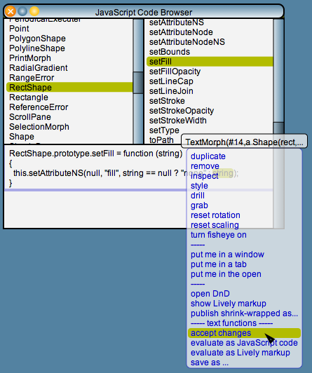

Lively Kernel Tutorial: (13) Class Browser
Back to Introduction
PREVIOUS
Source code of this demo
NEXT
The Lively Kernel system has a class browser that allows
the behavior of the system to be viewed and edited interactively.
The upper left panel of the browser contains the names of the
Lively Kernel (JavaScript) classes in the system.
When you select one of them, the upper right panel shows
all the methods (functions) of that class.
When you choose one of the methods, the lower panel shows the
source code of the method.

Notes:
- To save changes after editing a method, use the "accept changes"
operation that is available in the popup menu of the method panel.
You can also use the keyboard shortcuts defined below.
There are various keyboard shortcuts available to edit the methods (NOTE: these do not work on all browsers yet):
- Command-S (Alt-S) ("Save-It"): Save (accept) the changes
- Command-A (Alt-A): Select All
- Command-X (Alt-X): Cut
- Command-C (Alt-C): Copy
- Command-V (Alt-V): Paste
- Command-Z (Alt-Z): Undo
Try it yourself! Try viewing the methods of class RectShape.
Try editing some of the methods to make changes to the behavior of the system
itself.
For instance, if you modify the method RectShape.setFill as shown below,
you change the way menus and many other objects in the system are drawn.
You have to accept the changes by pressing Command-S or by choosing the "evaluate text"
popup menu item of the text that you just edited.
RectShape.prototype.setFill = function(string)
{
this.setAttributeNS(null, "fill", Color.green);
}
Try opening any popup menu after completing this change.
The background color of the menu should now be green.